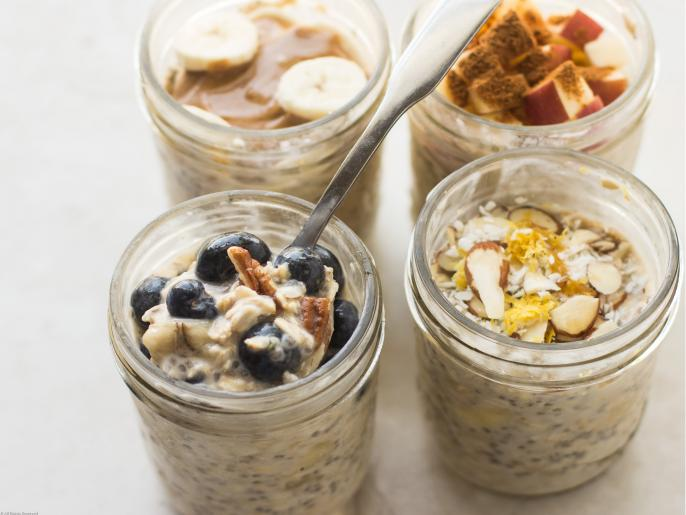

Overnight Oats

Description
This recipe is perfect for you if you have had a long day at work and did not want to meal prep your breakfast. All you need to do is get the oats and the jar. You will be all set.
Ingredients
- 1/3 to 1/2 cup liquid such as dairy milk, almond, cashew or coconut milk
- 1/3 to 1/2 cup old-fashioned rolled oats
- 1/3 to 1/2 cup yogurt, optional
- 1 teaspoon chia seeds, optional but highly recommended
- 1/2 banana, mashed, optional
Steps
- Add the desired amounts of milk, oats, yogurt, chia seeds and banana to a jar or container and give them a good stir. Refrigerate overnight or for at least 5 hours.
- In the morning, add additional liquid if you'd like. Once you achieve the desired consistency, top with fruit, nuts, nut butter, seeds, protein powder, granola, coconut, spices, zest or vanilla extract.